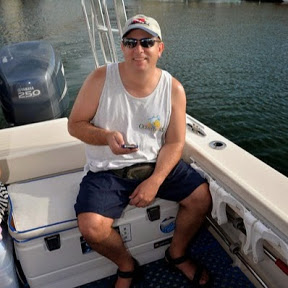

|  | Jim CochemsSoftware Web Developer - Tech Lead - Disney Vacation Club I am an intermediate Frontend Web Developer. I currently work in Orlando, FL for the Disney Signature Experiences division of Disney Parks, Experiences and Products division. I have worked for Disney for 11 years having begun in the Quality Assurance department in 2008. I enjoy scuba diving in my spare time and learning more about full stack frontend Web Development. |
| Dates | Title |
|---|---|
| 2008 - 2019 | Web Developer at The Disney Company |
| 2007 | Ebsco Publishing |
| Web Development | ⭐⭐ |
| Splunk | ⭐⭐⭐ |
| ServiceNow | ⭐⭐⭐⭐ |